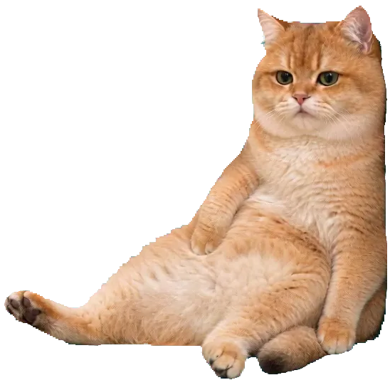
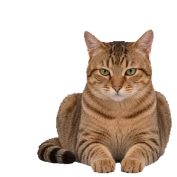

小红书
桌面陪伴 · 一对一定制
把你家宠物，
把你家宠物，
带到电脑桌面 陪伴你。
上传一张清晰照片，选择喜欢的动作，把它做成会动的桌面小伙伴，陪你工作、陪你发呆。
Windows 10 / 11
 macOS
支持多宠一次制作 · 永久有效
macOS
支持多宠一次制作 · 永久有效
macOS
支持多宠一次制作 · 永久有效
选一只先试试：
拖我一下，或者点我摸摸 ✋

在呢，一直都在。
↑ 这是网页里的预览。点右上角「打开控制台」，就能把它真正放到你的桌面上。
欣赏一下大家做好的宠物吧
可爱是人类的共享资源。
每一只都来自主人上传的真实照片。
点一下，就能让它变成你的桌宠。
主人分享评价
看看宝宝们在桌面上的真实表现。
它不占地方，
却总在角落里陪着你。
 抖音
抖音
怎么做
只需三步，把它带到桌面。
你不需要懂技术。
上传一张照片，我们处理剩下的一切。
01
挑动作并下单
选择喜欢的本领 · 先看动作
已选 3 个本领点击可让桌宠做这个动作
02
上传照片并制作
它的真实模样 · 下单后
 照片已上传 ✓
照片已上传 ✓
清晰的照片
03
制作完成，导入桌面
它来陪你啦 · Windows / Mac
不用下载，本地一键直达
现在就让它来陪你
它已经在桌面等你了。
拖动它、摸摸它、给它改名字，或者换成你家那只真的。